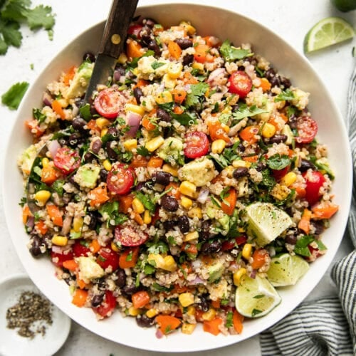

Quinoa Salad with Avocado and Black Beans

The wholesome base of quinoa combines seamlessly with the smooth texture
of diced avocado, the earthiness of black beans, and the sweetness of cherry
tomatoes. Tossed together with fresh cilantro and dressed in a zesty lime
vinaigrette.
Ingredients:
- Quinoa (1 cup, cooked)
- Avocado (1 unit, diced)
- Black beans (1 can, drained and rinsed)
- Corn (1 cup, cooked)
- Cherry tomatoes (1 cup, halved)
- Fresh cilantro (1/4 cup, chopped)
- Lime juice (2 tablespoons)
- Olive oil (2 tablespoons)
- Salt and pepper to taste
Steps:
- Cook the quinoa according to the package instructions and let it cool.
- In a large bowl, combine quinoa, avocado, black beans, corn, cherry tomatoes, and cilantro.
- In a small bowl, mix lime juice, olive oil, salt, and pepper.
- Pour the vinaigrette over the salad and mix well.
- Refrigerate the salad for at least 30 minutes before serving. A healthy and delicious option!